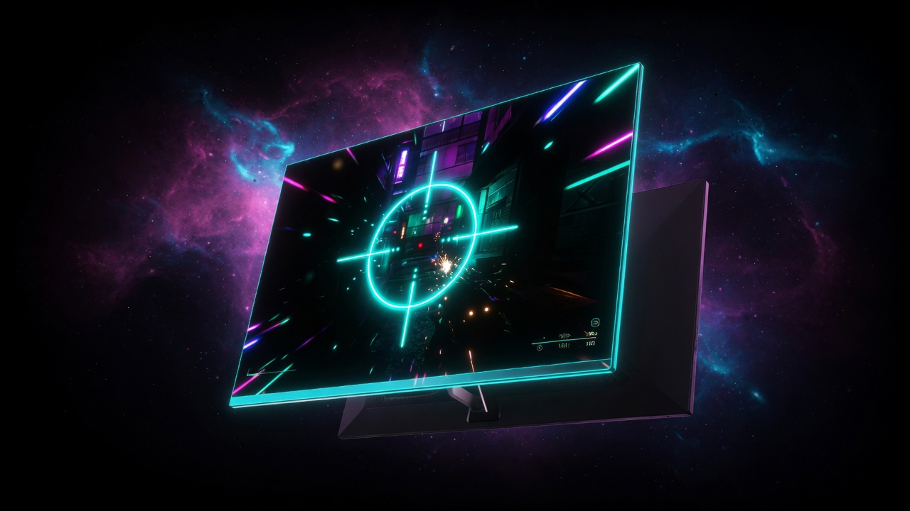
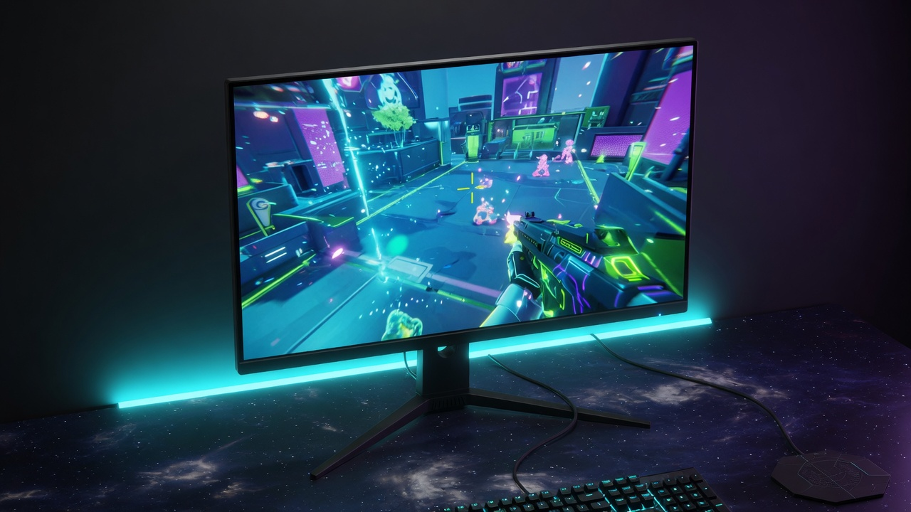

Best OLED Gaming Monitors 2026
Updated August 2026. OLED stopped being the exotic corner of the monitor aisle. 27-inch 1440p 240Hz QD-OLED now streets near $350. 480Hz 1440p WOLED exists if you actually have the FPS. 4K HDMI 2.1 OLED is the console and pretty-PC story. We did not measure these panels. Cross-check RTINGS / Hardware Unboxed when the specific SKU matters.
| Pick | Monitor | ~Price | Panel |
|---|---|---|---|
| 💰 Value OLED | MSI MAG 272QP QD-OLED X24 | $350 | 27" 1440p 240Hz QD-OLED |
| 🎯 Esports Hz | LG 27GX790A | $470–$1,000 | 27" 1440p 480Hz WOLED |
| 🖥 Stay LCD | ASUS XG27ACS | $200 | 27" 1440p 180Hz Fast IPS |
1. Best value OLED — MSI MAG 272QP QD-OLED X24

This is the SKU that made OLED a mid-range conversation. 240Hz is enough for almost every GPU that is not a 5090 esports box. Glossy QD-OLED, OLED Care 2.0, 3-year coverage is the thing to verify on the box. Not the brightest full-screen SDR panel — dim rooms win.
🛒 Check Price on Amazon2. Esports Hz — LG UltraGear 27GX790A

Public reviews treat this generation as the 480Hz competitive OLED, with newer 540Hz dual-mode panels (ASUS PG27AQWP-W class) above it. Street price has been chaotic — $468 deal headlines and $999 list in the same month. Only buy 480Hz if your GPU actually holds 300+ in the games you play. Use the Hz calculator.
🛒 Amazon search3. Honest LCD off-ramp — ASUS XG27ACS

If OLED money is the wrong money, this is the 2026 LCD, not a leftover 27GP850. Matte, 180Hz, USB-C video. No true blacks. No burn-in anxiety.
Full monitors guide → 🛒 Check Price on AmazonWhat we are not ranking blindly
32-inch 4K 240Hz OLED (MSI MAG 321UPX / ASUS PG32UCDM class) is the pretty-PC and HDMI 2.1 console upgrade. We are not pretending one SKU is stable at one price in August. If your GPU is mid-range, 1440p OLED is the smarter first OLED.